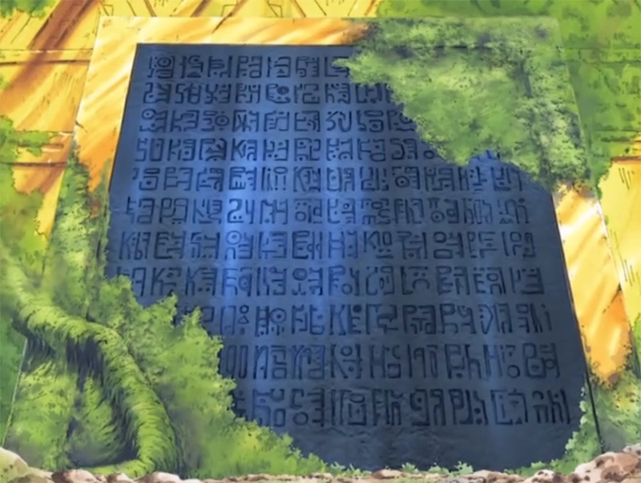
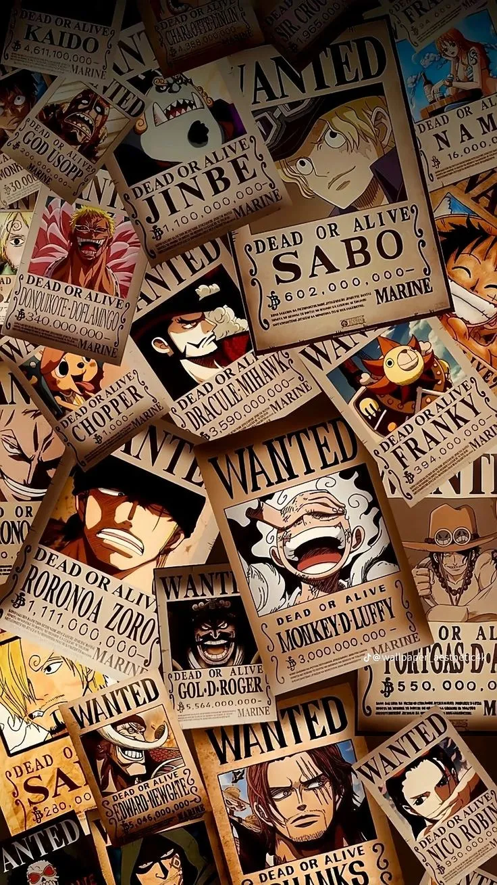
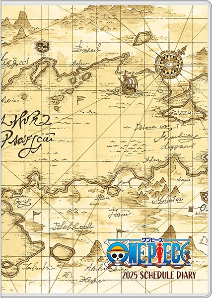

ONE PIECE ENCYCLOPÉDIE
Explorez l'univers complet de One Piece : personnages, îles, fruits du démon, histoire, équipages et secrets du monde.
One Piece (ワンピース, Wan Pīsu?) est une série de mangas shōnen créée par Eiichirō Oda. Elle est prépubliée depuis le 22 juillet 1997 dans le magazine hebdomadaire Weekly Shōnen Jump, puis regroupée en Tankōbon aux éditions Shūeisha depuis le 24 décembre 1997. 102 tomes sont commercialisés au Japon en avril 2022. La version française est publiée en volumes reliés depuis le 1er septembre 2000 par Glénat, et 101 volumes sont commercialisés en mai 2022. Depuis le 26 septembre 2021, la version française est prépubliée simultanément avec la version japonaise sur les plates-formes en ligne Manga Plus et Glénat Manga Max. L'histoire suit les aventures de Monkey D. Luffy, un garçon dont le corps a acquis les propriétés du caoutchouc après avoir mangé par inadvertance un fruit du démon. Avec son équipage de pirates, appelé l'équipage de Chapeau de paille, Luffy explore Grand Line à la recherche du trésor ultime connu sous le nom de « One Piece » afin de devenir le prochain roi des pirates.




Évènements actuels
Animé
Arc - épisode
Île ou ville ou pays
Il se passe ça date
Manga
Arc - chapitre
Île ou ville ou pays
Il se passe ça date